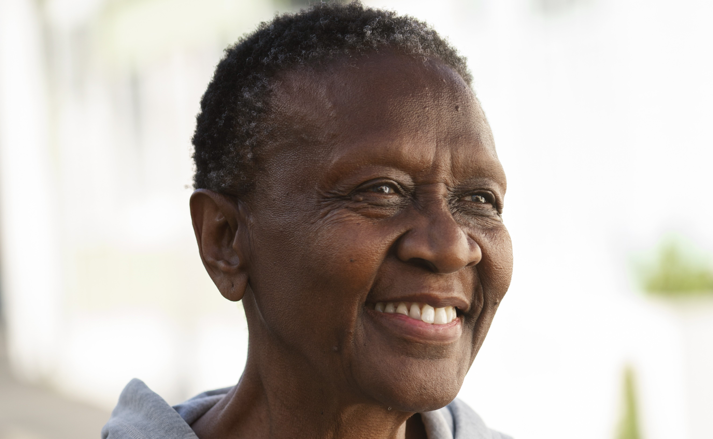

Depoimentos dos Clientes

Sou a Carmem Silva
A consulta online com o baralho cigano foi uma experiência muito positiva e recomendo a Mariah Cartomante para quem busca um atendimento profissional, atencioso e preciso.

Sou a Maria José
A experiência é profunda e transformadora, e a equipe oferece um atendimento profissional, acolhedor e personalizado.

Sou a Helena Battista
Recomendo com entusiasmo a Mesa Radiônica da equipe da Mariah para todos que buscam um caminho de cura, crescimento pessoal e autoconhecimento.